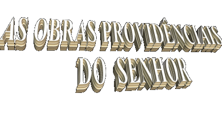
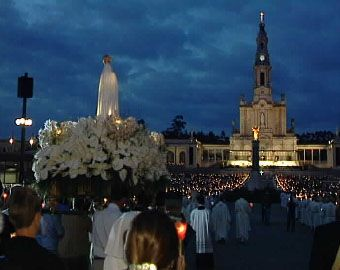
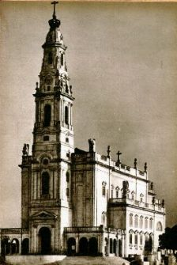
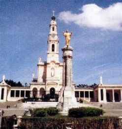
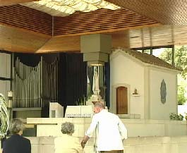

 Apesar dos constantes e contínuos erros da humanidade,
Apesar dos constantes e contínuos erros da humanidade,

DEUS infinita misericórdia, jamais nos abandonou, ELE quer
sempre salvar todos os seus filhos e por isso mesmo, ao longo dos séculos nos
enviou alertas, conselhos e recomendações, através de Mensageiros Divinos
que visitaram vários países , inclusive o Brasil, para nos lembrar a Sua Lei,
atualizar em nosso espírito, os Seus Ensinamentos à luz da realidade que
vivemos, esclarecendo trechos bíblicos que eram interpretados incorretamente
e também, acordando muitos corações embalados no sono letárgico do comodismo,
da indiferença e da falta de perseverança, derramando graças em quantidade
para acender o fervor espiritual, a fim de que a SANTÍSSIMA TRINDADE
seja mais conhecida, e possa ser de fato mais amada, louvada e
respeitada por todos os seus filhos.
E sem dúvida, a intervenção Divina
ocorreu com uma frequência e multiplicidade de manifestações sobrenaturais
tão apreciável, atingindo um valor tão expressivo, que nos propõe a idéia de
uma certa “urgência ”, "como
se o SENHOR tivesse pressa em alertar a humanidade", para que as pessoas se convertessem, antes que o “nosso Tempo”
terminasse.
O famoso teólogo francês Padre René Laurentin, catalogou
mais de 80 acontecimentos sobrenaturais verificados no século XX, o que nos faz
recordar a predição do profeta Joel (Jl 3,1), a qual afirma que aconteceria 
uma notável Efusão do ESPÍRITO SANTO (com Aparições e manifestações sobrenaturais
diversas), como fato sinalizador da chegada do
“Final dos Tempos” e da próxima “Vinda de CRISTO” na glória, para instaurar
definitivamente o Seu REINO DE AMOR E PAZ.
Entretanto, muitas pessoas não
acreditam nas Aparições e Revelações particulares, e para firmarem as suas opiniões
contrárias, estribam-se em variados tipos de argumentos fantasiosos e sem
qualquer consistência e fundamentados na total descrença.
Todavia, as Aparições sempre existiram. Em quase
todos os livros que compõe as Sagradas Escrituras, há dezenas de citações que descrevem
a intervenção do sobrenatural na existência da humanidade. Isto quer representar,
que as manifestações sobrenaturais estão inseridas no Plano Divino de Salvação,
constituindo-se numa “etapa” muito importante, que não pode e não deve ser desprezada.
O PAI ETERNO em comunhão com o FILHO
e pela ação do ESPÍRITO SANTO, da mesma forma que no passado, mantém
no presente um canal de comunicação aberto com toda a humanidade, através do qual
e por meio de Mensageiros, nos convida a conversão do coração e nos revela a Sua
última Vontade.
As manifestações
sobrenaturais só acontecem porque o SENHOR
permite. E como é natural,
os Mensageiros Divinos nos diálogos com os videntes, só transmitem
a “Vontade”
de DEUS e não a sua vontade particular. Ora, então se DEUS permite a vinda
de NOSSA SENHORA, por exemplo, é porque Ela é necessária e benéfica
à humanidade. Assim, quando nossa MÃE SANTÍSSIMA e os demais
Mensageiros Celestes vêm encontrar-nos, não é uma “simples visita” e nem
estão “fazendo turismo”, mas para uma finalidade objetiva, amorosa, responsável e urgente.
Vêm sobretudo, convidar-nos à conversão e estimular a nossa vontade para
sermos perseverantes nos deveres de cristãos, amando o próximo como
o SENHOR quer e sendo fiéis a ELE como demonstração da grandeza
de nosso amor filial.
Assim, negar e criticar as Aparições, não é uma
atitude inteligente para aqueles que afirmam amar a DEUS. Não só pelas muitas
razões expostas, mas também pelo
"sentido da sistemática recusa de crer"
nas manifestações sobrenaturais, o que representa uma ferrenha oposição, uma
feroz resistência contra as Obras do ESPÍRITO SANTO. E negar as Obras do
ESPÍRITO SANTO é um risco terrivelmente perigoso e sem apelação,
conforme disse JESUS:
“Todo pecado
e blasfêmia serão perdoados aos homens, mas a blasfêmia contra o ESPÍRITO
não será jamais perdoada”. (Mt 12,31)
A blasfêmia contra o
ESPÍRITO SANTO se concretiza, pela
intransigente
recusa de aceitar a verdade, de não discernir com fidelidade os fatos
sobrenaturais que ocorrem, de não procurar compreender corretamente
os sinais do SENHOR. Negando-os, a pessoa rejeita a oferta Divina
e se exclui a si próprio da salvação eterna.
O ESPÍRITO SANTO é a Terceira
Pessoa da SANTÍSSIMA TRINDADE, AQUELE que realiza as Obras
Providenciais do SENHOR, e sobretudo, é o poder interior da Igreja,
AQUELE que foi enviado por JESUS e pelo PAI ETERNO, quando
o REDENTOR regressou à Eternidade.

Próxima
Pagina

 Página Anterior
Página Anterior
Retorna
ao Índice